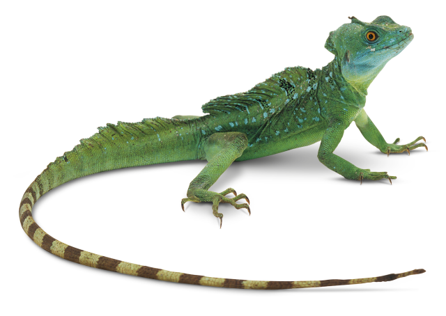

Why do people have pets?
If you have a pet, you can probably think of several good reasons for having one, but how did this idea get started in the first place?
No one knows for sure when the first animals lived alongside humans, but historians believe that we have always had close associations with animals, so the first pets were probably domesticated thousands of years ago.
Here are some of the reasons why people have pets:
- provide companionship
- help keep you fit
- reduce stress
- lower blood pressure
- improve mood
Cats

Cats make affectionate and playful pets and thrive best when they're cared for considering their dietary, environmental and health and welfare needs
Cats will need space to be active, with regular interaction with people and other animals (cats don't really like to be left alone for long periods during the day).
They will also need access to clean water, meat-based cat food and regular grooming as well as private access to a litter tray which should ideally be replaced once a week.
Understanding cat behaviourDogs

Owning a dog is great fun and immensely rewarding, but dogs have complex needs and each dog is unique.
There are about eight and a half million pet dogs in the UK, but sadly 4 out of 5 of them suffer from separation anxiety when left alone.
Dogs have highly developed senses
- they have an incredibly well-developed sense of smell, far superior to humans
- at certain frequencies, they can detect sounds up to four times quieter than humans can hear
- they can also hear in ultrasound, which is sound with a frequency greater than the upper limit of human hearing
- they can see better than humans in the dark and in dim light
Rabbits

Rabbits are a popular choice for many families with an estimated 1.5 million rabbits kept as pets in the UK, which is no surprise as rabbits are highly intelligent, inquisitive animals.
Rabbit's come in a variety of breeds, shapes and sizes and each bunny has their own unique personality.
Typically rabbits live for about 10 years, but some may live even longer. They are highly social, territorial animals who form complicated social structures.
They have continuously growing teeth, with the top front teeth growing at a rate of 3mm a week!
Feeding your rabbitGuinea pigs
Guinea pigs are small, sociable, chatty rodents. There are different breeds and varieties of guinea pigs, with a wide variety of colour and coat lengths.
Guinea pigs are traditionally thought of as good first pets for children, but it should always be an adult that takes responsibility to ensure they are properly handled and cared for.
Guinea pigs, or "cavies", are social animals with a compact, rounded body shape, short legs and no tail. They originate from the grasslands and lower slopes of the Andes Mountains in South America.
They are active for up to 20 hours per day and sleep only for short periods.
They need a high fibre diet that is supplemented with vitamin C, as they lack the enzyme needed to synthesise vitamin C and can only store vitamin C for short periods.
Guinea pig dietFish

Owning aquarium fish can be rewarding but it's a big responsibility. Fish aren't simple creatures to look at - they have very specific needs and require attentive and routine care. If you own or are responsible for pet fish, even on a temporary basis, you're required under the Animal Welfare Act 2006 to care for them properly.
Goldfish
Goldfish were first brought to England from China in the eighteenth century and have remained the most popular of cold water pet fish.
A common misconception with goldfish is the age and size they can reach. Lots of people think they live for about five years and generally grow to about 12cm in length, but they can live for up to 25 years and can reach over 40cm!
Freshwater tropical fish
Freshwater tropical fish come from tropical areas of the world and there's no limit to the variety of colours, shapes and behaviours. Different species have different behaviour - for example, some are 'shoaling fish', and feel more secure when kept as a group. Others aren't very social and will fight with either their own kind or other species.
Behaviour of different fish breedsReptiles
Reptiles in captivity have the same needs as they would in the wild, so their environmental, dietary and behavioural needs can be challenging.
Commonly-kept reptiles include bearded dragons, corn snakes, royal pythons and leopard geckos, but before deciding to care for one, there is plenty that needs to be researched:
- size of enclosure, heating and lighting requirements
- how long they'll live and how large they'll grow
- what they eat and how much
- whether it needs to be kept alone or with company
- availability of specialist vet care
- legal requirements